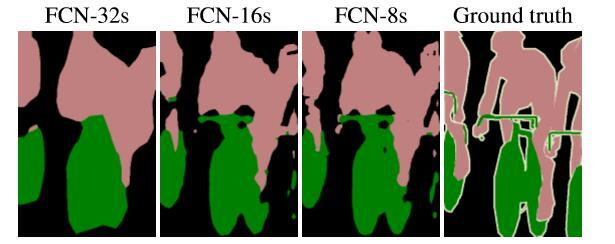

一、语义分割和实例分割的定义
定义1： 语义分割
将图片中的所有像素进行分类（包括背景） ，不区分具体目标， 仅做像素级分类。 例如， 将图a上面一行图片进行语义分割的结果为下面一行图片。
定义2： 实例分割
对于有多个目标的图片， 对每个目标完成像素级的分类， 并区分每一个目标（即区分同一个类别但属于不同的目标） 。 例如， 对图b左边一列图片进行实例分割， 可以得到右面一列图片 。
二、FCN
语义分割需要对图片的每个像素做分类， 最容易想到的方法是什么？
1、最简单的语义分割方法
既然是对原图的每个像素进行分类， 那么将输出层的每一个像素点当作分类任务做一个Softmax即可。 即对于一张W*H*3的图片， 中间经过若干层卷积， 卷积的kernel大小为W*H， 最终通过一个W*H*C（C为之前定义好的类别个数） 的Softmax对原图的每一个像素进行分类，
这种最简单解决方案的问题是中间卷积层尺度太大， 内存和计算量的消耗也非常大。
2、FCN架构

在2015年， Long、 Shelhamer、 Darrell和Noh等人提出了在卷积神经网络内部使用下采样和上采样结合的方式实现图片的语义分割， 该方案的大体结构如上图所示。 在这个过程中， 下采样主要是通过我们之前学习过的Pooling（池化） 和调整卷积的stride（步幅） 来实现的， 上采样的过程其实就是与下采样相反， 主要包括Unpooling（反池化）和Deconvolution（转置卷积） 两种方式。 FCN采用的是最大池化下采样和转置卷积和双线性插值进行上采样。
上图给出了几种常见的Unpooling方法， 其中a和简单易懂， 这里不做赘述， 值得一提的是c中Max Unpooling的方式， 若使用该方法， 则需要在下采样Max Pooling时记录对应Max元素的位置， 在Unpooling的时候将每个元素写回到对应的位置上。 所以，这种方式需要注意下采样和上采样过程对应的问题。
不论是Unpooling方式还是Deconvolution的方式， 关键层都是以卷积的方式进行操作， 不涉及类似全连接这种操作， 因此我们通常称这种网络为全卷积网络（Full Connected Network， FCN） 。
3、跳跃融合
论文示图：

跳跃融合是为了获得更加精细的分割结果，我们先看下图：
整个FCN网络基本原理如图（只是原理示意图）：
- image经过多个conv和一个max pooling变为pool1 feature，宽高变为1/2
- pool1 feature再经过多个conv一个max pooling变为pool2 feature，宽高变为1/4
- pool2 feature再经过多个conv一个max pooling变为pool3 feature，宽高变为1/8
- ……
- 直到pool5 feature，宽高变为1/32。
那么：
pool1到pool5是五个最大池化层，因此图中的pool5层的大小是原图image的1/32（1/$2^5$）。
- 对于FCN-32s，直接对pool5 feature进行32倍上采样获得32x upsampled feature，再对32x upsampled feature每个点做softmax prediction获得32x upsampled feature prediction（即分割图）。
- 对于FCN-16s，首先对pool5 feature进行2倍上采样获得2x upsampled feature，再把pool4 feature和2x upsampled feature逐点相加，然后对相加的feature进行16倍上采样，并softmax prediction，获得16x upsampled feature prediction。
- 对于FCN-8s，首先进行pool4+2x upsampled feature逐点相加，然后又进行pool3+2x upsampled逐点相加，即进行更多次特征融合。然后对融合的feature进行8倍上采样，并softmax prediction，获得8x upsampled feature prediction。
作者在原文种给出3种网络结果对比，明显可以看出效果：FCN-32s < FCN-16s < FCN-8s，即使用多层feature融合有利于提高分割准确性。

4、CNN图像语义分割总结
CNN图像语义分割也就基本上是这个套路：
- 下采样+上采样：Convolution + Deconvolution／Resize
- 多尺度特征融合：特征逐点相加／特征channel维度拼接
- 获得像素级别的segment map：对每一个像素点进行判断类别
三、UNet
全卷积网络可用作语义分割， 最经典的莫过于2015年夺得CVPR最佳论文的《Fully Convolutional Networks for Semantic Segmentation》。 这里扩展一下， 介绍在经典FCN基础上改良之后广泛应用在医疗影像里面的U-Net， 它的网络结构如图下所示。
U-Net的网络结构非常清晰， 即下采样后经过2次卷积后再次下采样， 而上采样则使用反卷积的方式， 并与对应大小的下采样特征层进行连接， 然后经过2次卷积后再反卷积。 这个网络结构很简单， 因此对于小样本量数据集有很好的效果。
与FCN逐点相加不同，U-Net采用将特征在channel维度拼接在一起，形成更“厚”的特征。所以：
语义分割网络在特征融合时也有2种办法：
- FCN式的逐点相加，对应caffe的EltwiseLayer层，对应tensorflow的tf.add()
- U-Net式的channel维度拼接融合，对应caffe的ConcatLayer层，对应tensorflow的tf.concat()
四、SegNet
发表于2016年，作者 Vijay Badrinarayanan, Alex Kendall, Roberto Cipolla, Senior Member
模型结构：
SegNet与FCN类似，也移除了全连接层，不同的是，采用了编码器-解码器结构，在上采样和下采样中使用了不同的方法。
SegNet的编码器部分使用的是VGG16的前13层卷积网络,每个编码器层都对应一个解码器层,最终解码器的输出被送入soft-max分类器以独立的为每个像素产生类概率。
每个编码器由数个蓝色层（卷积层,批归一化层,RELU层）以及一个Pooling层（2x2窗口,步进2,最大池化）组成,输出相当于系数为2的下采样。
创新点:
在 encoder 部分的最大池化操作时记录了最大值所在位置（索引），然后在 decoder upsampling时直接将数据放在原先的位置，，这样在上采样阶段就无需学习。上采样后得到的是一个稀疏特征图，再通过普通的卷积得到稠密特征图，再重复上采样。SegNet 主要比较的是 FCN，FCN解码时用transposed convolutions+双线性插值来获得特征图，再和对应 encoder 的特征图相加得到输出。SegNet 的优势就在于不用保存整个 encoder 部分的特征图，只需保存池化索引，节省内存空间；第二个是不用反卷积，上采样阶段无需学习，尽管上采样完以后还要卷积学习。
优点:
SegNet的主要动机是场景理解的应用。因此它在设计的时候考虑了要在预测期间保证内存和计算时间上的效率。
五、PSPNet
Pyramid Scene Parsing Network（PSPNet）是CVPR2017上关于场景解析的文章，拿到了2016年ImageNet比赛中scene parsing任务的冠军，当然也常用来做语义分割。这篇文章出发点是在语义分割算法中引入更多的上下文信息（context information）和局部信息， 这样能够避免许多误分割，具体说明如下。
1） 语义之间存在一定的关联性， 比上图的第一行， 传统FCN将“船”预测成了“汽车”， 但如果考虑上下文信息就可以知道， “汽车”是不可能出现在“河”上面的。
2） 对于易混淆的类， 如上图第二行的“摩天大楼”， 传统FCN将该物体的一部分分割为“摩天大楼”， 一部分分割为“建筑”， 而实际上这是同一个物体， 或者被分为“摩天大楼”， 或者被分为“建筑”， 而不是两者都有。 产生这种问题的原因是没有考虑局部的物体信息。
3） 一些细小的物体在语义分割时经常被忽略，如上图的第三行的“枕头”。 “枕头”的花色和床单很接近从而导致被FCN误分类， 如果我们更加关注局部特征的获取， 那么这里就可以更好地区分出“枕头”与“床”。
模型结构

创新点: 金字塔池化模型
- 第一个红色部分是独立的全局池化
- 第二个黄色是将特征层分为4块不同的子区域进行池化，后面蓝色、 绿色的层以此类推。
- 池化后为了保证不同尺度的权重， 通过1*1的卷积对特征层降维到1/N（N为不同尺度的数量， 这里是4） 。 然后将N个降维后的特征层上采样到原特征层尺寸并与原特征层进行合并， 最终形成多尺度融合后的特征层 。
六、实例分割
目标检测是将图片中的物体位置检测出来并给出相应的物体类别， 语义分割是给出每个像素的类别， 只区分类别， 不区分是否为同一个物体， 而实例分割则是要给出类别并区分出不同的物体， 如下图所示:
由于实例分割需要识别出“每一个物体”， 因此需要进行目标检测， 而它又需要得到像素级别分割的结果， 因此还需要将语义分割的方法融合进来， 这实际上是一个多任务学习的方法。 多任务学习通常具有两种方式： 一种是堆叠式， 即将不同的任务通过某种方式连接起来进行训练； 另一种是扁平式， 即每个任务单独训练。
1、层叠式
这里首先介绍一下2015年的一篇文章《Instance-aware Semantic Segmentation via Multi-task Network Cascades》， 该方法虽然不是做实例分割的最好方法， 但这种层叠式的“head”也是一种方法， 可供读者拓宽思路。 层叠式方法具体可分为3个步骤， 如上图所示。
1） 检测——使用Faster R-CNN的RPN方法预测所有潜在物体的bbox（这里只做二分类区分是不是物体） 。
2） 分割——将步骤1） 的ROI压缩到指定尺寸（论文中是14*14*128） ， 通过两个全连接层（用来降维） 后预测每个像素点是不是物体。
3） 分类——将步骤1） 和步骤2） 的结果统一到一个尺寸做元素级点乘， 再过两个全连接层后对每个ROI进行分类预测。
2、扁平式
由于目标检测的结果既有紧贴着目标的矩形框， 又有矩形框里目标的类别， 那么是否可以基于目标检测的结果， 直接在上面做FCN实现像素级分割呢。 答案是肯定的，
Mask-RCNN做的就是这样的事情。 Mask-RCNN是在目前业界公认的效果较好的检测模型Faster R-CNN的基础上直接添加第三个分割分支 ,如下图所示:
由于Faster R-CNN已经有了bbox和bbox的类别， 因此如何定义第三个分割分支的学习方法就是关键。 Mask-RCNN的head设计如上图所示， 即在Faster R-CNN的最后一个特征层（7*7*2048） 上进行上采样（反卷或反池化） ， 然后再对上采样后的特征层进行像素级预测。 这里需要注意的是， 输出层是14*14*80（80是需要预测的类别个数） ， 而不是Softmax对应1个channel， 原因是Mask-RCNN的作者将每个channel看作一个类别，每个channel只采用2分类的Sigmoid来预测该点是否属于该类物品。
参考
FCN-UNet: https://blog.csdn.net/justpsss/article/details/77170004
https://zhuanlan.zhihu.com/p/31428783
SegNet: https://www.cnblogs.com/tccbj/p/10746406.html
《深度学习与图像识别: 原理与实战》